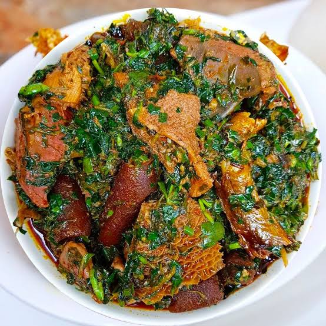
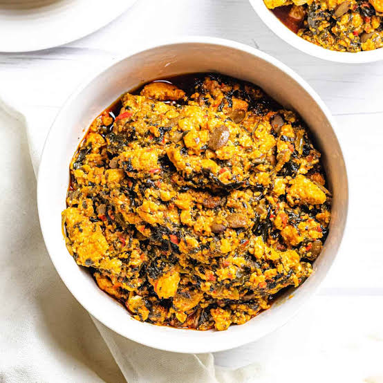

Afang

Egusi

Click on any one to view its recipe
Afang soup is a delicious and nutritious Nigerian delicacy popular among the Efik and Ibibio people of Cross River and Akwa Ibom States. It's made from a blend of Afang leaves (wild spinach) and water leaves, cooked with assorted meats, stockfish, and dry fish. To start, parboil the meat with onions, seasoning cubes, salt, and pepper until tender. Add stockfish and dry fish, then pour in palm oil, crayfish, and periwinkle if desired. Allow it to simmer until the flavors blend beautifully. Next, add the sliced water leaves and let them cook for a few minutes to release their moisture. Stir in the finely pounded or blended Afang leaves and cook on low heat until the soup thickens and the oil rises to the top. The soup should have a rich, earthy flavor with a slightly bitter undertone from the Afang leaves. Serve hot with garri, pounded yam, or fufu for a hearty traditional meal.
Egusi soup is one of Nigeria’s most loved dishes, made with ground melon seeds that give it a rich, nutty flavor and thick texture. Begin by heating palm oil in a pot and adding onions and blended pepper. Stir in the ground egusi (melon) paste — made by mixing the egusi with a little water — and fry gently until it becomes slightly grainy and aromatic. Then, pour in stock or water, add your cooked meat and stockfish, and let it all simmer. After the soup begins to thicken, add crayfish, seasoning cubes, and salt to taste. Finally, add washed bitter leaf or spinach and allow the soup to cook for another few minutes until the leaves are tender and well blended into the soup. The result is a flavorful, creamy, and satisfying meal best served with pounded yam, eba, or semovita.
Fried rice is a colorful and tasty dish made with cooked rice stir-fried with vegetables, liver, and a mix of seasonings. To prepare it, start by parboiling your rice and cooking it briefly in seasoned stock (with curry, thyme, salt, and seasoning cubes) until it’s firm but not too soft. In a large frying pan or pot, heat some oil and stir-fry diced carrots, green beans, sweet corn, bell peppers, and chopped liver or chicken for a few minutes. Add the cooked rice to the vegetables and stir-fry everything together on medium heat so the rice absorbs the flavor and color evenly. Continue tossing the mixture until the rice looks golden and fragrant. You can garnish with spring onions or serve alongside fried plantains, grilled chicken, or salad for a complete Nigerian-style party dish.
Hover over each card to learn more!
Frontend Developer
UI/UX Designer
Backend Engineer